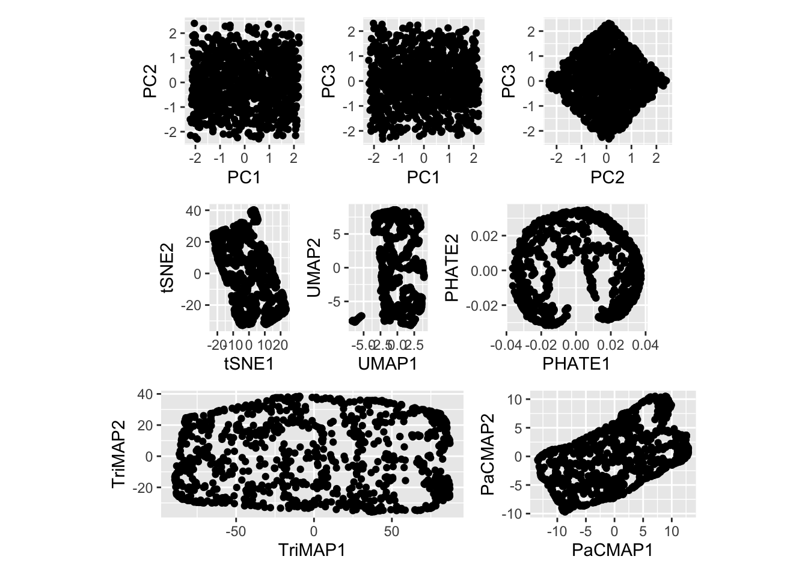

What is meant by low-dimensional representation?
Today, I will introduce some basic terminologies regarding low-dimensional representation and types of low-dimensional reduction techniques and visualize some outcomes of low-dimensional reductions of an example dataset.
Let’s begin…
The first question that comes to your mind is, “What is meant by low-dimensional representation?”.
A low-dimensional representation is a visualization of the dimension reductions on high-dimensional data.
Got it…
I know what the next problem you have now is. How do we define a data set as a high-dimensional data set?
Suppose the number of features (variable observed) is close to or larger than the number of observations (or data points). In that case, the data set is specified as high-dimensional. On the other hand, a low-dimensional data set in which the number of features is less than the number of observations.
Next,
Why do we need a low-dimensional representation?
There are various applications in the field of machine learning and deep learning. For example, a low-dimensional data representation can be used as a noise-removal or feature-extraction technique.
Are there any challenges with high-dimensional data?
One of our challenges is that analyzing high-dimensional data requires considering potential problems with more features than observations.
In addition, most classical statistical methods are set up for low-dimensional data because low-dimensional data were much more common in the past when data collection was more difficult and time-consuming. However, the development of information technology has allowed large amounts of data to be collected and stored with relative ease, allowing large numbers of features to be collected in recent years.
Also, visualizing a large number of features takes a lot of work.
I hope you all have a basic idea about the terminologies and the challenges with high-dimensional data. The necessity of low-dimension reduction techniques comes as a remedy for the above challenges, especially in the visualization task.
Dimensionality reduction is a common step for data processing. This process is helpful for feature engineering or data visualization. From here onwards, I focus on how the visualization looks in various dimension reduction techniques.
Before starting, how many dimensions are defined as low-dimensional reductions?
Generally, most dimension reduction techniques allow the reduction of high-dimensional data to two or three dimensions (eg: t-distributed stochastic neighbor embedding (t-SNE)).
Dimension reduction tools for visualization can be categorized as follows.
Linear dimension reduction techniques
- Principal Component Analysis (PCA)
- Linear Discriminant Analysis (LDA)
- Multidimensional Scaling (MDS)
Non-linear dimension reduction techniques (Manifold learning)
- t-distributed stochastic neighbor embedding (tSNE)
- Uniform Manifold Approximation and Projection (UMAP)
- Potential of Heat-diffusion for Affinity-based Trajectory Embedding (PHATE)
- Large-scale Dimensionality Reduction Using Triplets (TriMAP)
- Pairwise Controlled Manifold Approximation (PaCMAP)
- Auto Encoder (AE)
The high variance directions reflect the key trends in the data set in a linear dimensionality reduction technique. For example, a new axis is linear and may be non-orthogonal [@paper2]. In contrast, non-linear dimensionality reduction utilizes non-linear kernels to locate key data set trends while preserving the original data’s local and global structure (neighborhood relation). In terms of preserving the local and global structure, the distance or distance ranks between data points in the original space should be preserved after reducing the dimensions to low-dimensional space.
You can find more details about the local and global structure here.
Example
A simulated dataset is generated to obtain a \(2-d\) plane in \(4-d\) with little noise in third and fourth dimensions.
Code
random_num1 <- runif(1, min = 1, max = 10000000)
set.seed(random_num1)
u <- runif(1000, min = 10, max = 30)
v <- runif(1000, min = 10, max = 20)
x <- u + v - 10
y <- v - u + 8
z <- rep(0, 1000) + runif(1000, 0, 1)
w <- rep(0, 1000) - runif(1000, 0, 1)
df_2 <- tibble::tibble(x1 = x, x2 = y, x3 = z, x4 = w)
langevitour(df_2)Let’s visualize PCA, t-SNE, UMAP, PHATE, TriMAP, and PaCMAP and see whether they preserve the \(2-d\) plane’s structure after applying dimension reductions.
Note: The default parameters are used to perform dimensionality reduction techniques.
Code
## PCA
calculate_pca <- function(feature_dataset, num_pcs){
pcaY_cal <- prcomp(feature_dataset, center = TRUE, scale = TRUE)
PCAresults <- data.frame(pcaY_cal$x[, 1:4])
summary_pca <- summary(pcaY_cal)
var_explained_df <- data.frame(PC= paste0("PC",1:4),
var_explained=(pcaY_cal$sdev[1:4])^2/sum((pcaY_cal$sdev[1:4])^2))
return(list(prcomp_out = pcaY_cal,pca_components = PCAresults, summary = summary_pca, var_explained_pca = var_explained_df))
}
pca_ref_calc <- calculate_pca(df_2,4)
var_explained_df <- pca_ref_calc$var_explained_pca
PCA_df <- pca_ref_calc$pca_components
PCA_df_plot1 <- PCA_df %>%
ggplot(aes(x = PC1,
y = PC2)) +
geom_point() +
coord_fixed()
PCA_df_plot2 <- PCA_df %>%
ggplot(aes(x = PC1,
y = PC3)) +
geom_point() +
coord_fixed()
PCA_df_plot3 <- PCA_df %>%
ggplot(aes(x = PC2,
y = PC3)) +
geom_point() +
coord_fixed()
## tSNE
set.seed(100001)
tSNE_fit <- df_2 %>%
select(where(is.numeric)) %>%
Rtsne()
tSNE_df <- tSNE_fit$Y %>%
as.data.frame()
names(tSNE_df)[1:2] <- c("tSNE1", "tSNE2")
tSNE_df_plot <- tSNE_df %>%
ggplot(aes(x = tSNE1,
y = tSNE2)) +
geom_point() +
coord_fixed()
## UMAP
set.seed(100002)
UMAP_fit <- df_2 %>%
select(where(is.numeric)) %>%
umap()
UMAP_df <- UMAP_fit$layout %>%
as.data.frame()
names(UMAP_df)[1:2] <- c("UMAP1", "UMAP2")
UMAP_df_plot <- UMAP_df %>%
ggplot(aes(x = UMAP1,
y = UMAP2)) +
geom_point() +
coord_fixed()
## Phate
# use_python("~/miniforge3/envs/pcamp_env/bin/python")
# use_condaenv("pcamp_env")
# set.seed(100003)
# tree_phate_fit <- phate(df_2, 2)
#
# PHATE_df <- as.data.frame(tree_phate_fit$embedding) %>%
# mutate(ID=row_number())
#
# names(PHATE_df)[1:2] <- c("PHATE1", "PHATE2")
# write.csv(PHATE_df, paste0(here::here(), "/learning/learning_2/PHATE_df.csv"))
PHATE_df <- read_csv(paste0(here::here(), "/posts/blog_3/PHATE_df.csv"))
PHATE_df_plot <- PHATE_df %>%
ggplot(aes(x = PHATE1,
y = PHATE2)) +
geom_point() +
coord_fixed()
## TriMAP
# source_python("Fit_TriMAP_code.py")
#
# n_inliers_n <- as.integer(12)
# n_outliers_n <- as.integer(4)
# n_random_n <- as.integer(3)
#
# data_pca <- df_2 %>%
# select(where(is.numeric))
#
# tem_dir <- tempdir()
#
# write.csv(data_pca, file.path(tem_dir, "df_2_without_class.csv"), row.names = FALSE,
# quote = TRUE)
#
# path <- file.path(tem_dir, "df_2_without_class.csv")
# path2 <- file.path(tem_dir, "dataset_3_TriMAP_values.csv")
#
# set.seed(100004)
#
# Fit_TriMAP(as.integer(2), n_inliers_n, n_outliers_n, n_random_n, path, path2)
#
# df_TriMAP <- read.csv(path2)
# write.csv(df_TriMAP, paste0(here::here(), "/learning/learning_2/TriMAP_df.csv"))
TriMAP_df <- read_csv(paste0(here::here(), "/posts/blog_3/TriMAP_df.csv"))
TriMAP_df_plot <- TriMAP_df %>%
ggplot(aes(x = TriMAP1,
y = TriMAP2)) +
geom_point() +
coord_fixed()
## PaCMAP
# source_python("Fit_PacMAP_code.py")
#
# knn_n <- as.integer(10)
# init_n <- "random"
# MN_ratio_n <- 0.5
# FP_ratio_n <- 2.0
# data_pca <- df_2 %>%
# select(where(is.numeric))
#
# tem_dir <- tempdir()
#
# write.csv(data_pca, file.path(tem_dir, "df_2_without_class.csv"), row.names = FALSE,
# quote = TRUE)
# set.seed(100005)
# path <- file.path(tem_dir, "df_2_without_class.csv")
# path2 <- file.path(tem_dir, "dataset_3_PaCMAP_values.csv")
# Fit_PaCMAP(as.integer(2), knn_n, init_n, MN_ratio_n, FP_ratio_n, path, path2)
#
# df_PaCMAP <- read.csv(path2)
#
# write.csv(df_PaCMAP, paste0(here::here(), "/learning/learning_2/PaCMAP_df.csv"))
PaCMAP_df <- read_csv(paste0(here::here(), "/posts/blog_3/PaCMAP_df.csv"))
PaCMAP_df_plot <- PaCMAP_df %>%
ggplot(aes(x = PaCMAP1,
y = PaCMAP2)) +
geom_point() +
coord_fixed()
(PCA_df_plot1 + PCA_df_plot2 + PCA_df_plot3 ) / ( tSNE_df_plot + UMAP_df_plot + PHATE_df_plot )/( TriMAP_df_plot + PaCMAP_df_plot)
As shown in Figure Figure 2, you can see the outcomes visualized by some dimensionality reduction techniques.
In our next blog, we will see why these dimensionality reduction representations differ from the original structure in high-dimensional space.